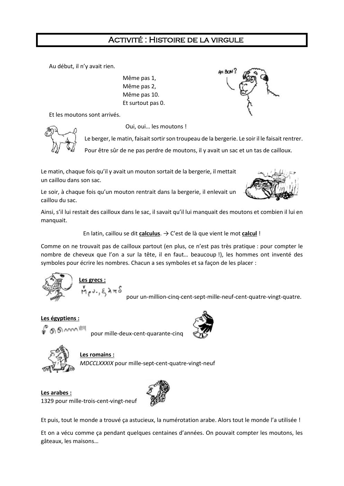
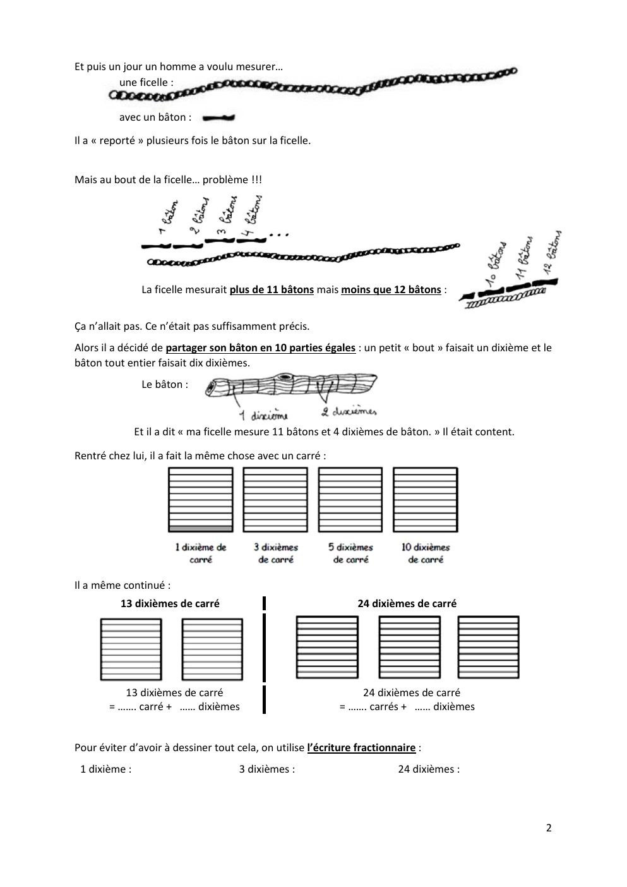
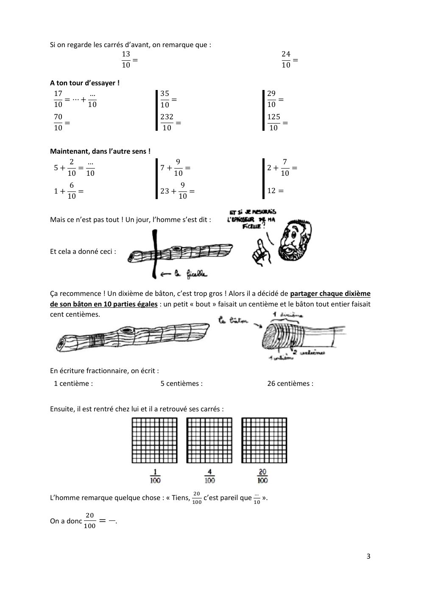
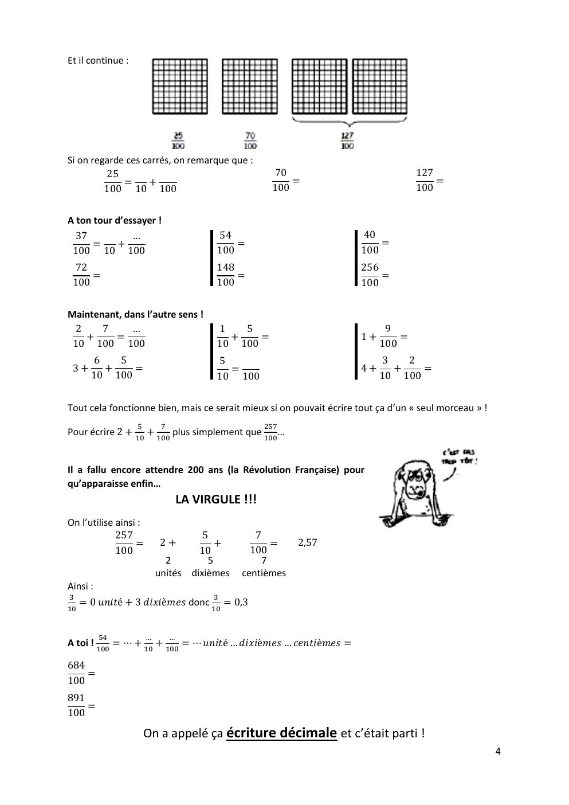

6e · Chapitre 4 · Activité
L'histoire de la virgule
L'activité de découverte : du bâton partagé en 10 jusqu'à l'invention de la virgule. Lis-la, ou télécharge-la pour la refaire sur papier.




Document : « Activité — Histoire de la virgule », auteure : Laura Guimard.